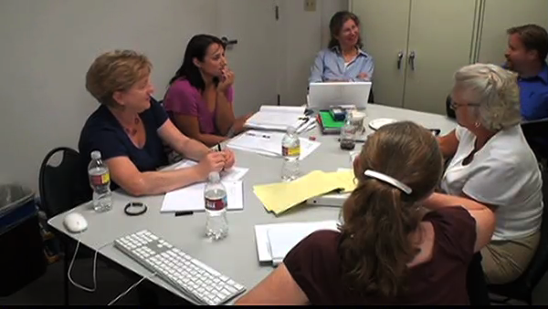

Teachers found that interacting with each other was invaluable to the process of becoming responsive educators. This area of the website shares selected videos from teacher meetings.
The first video showcases teachers developing a better understanding of evaporation as they try to understand students' ideas. The remaining videos are from one meeting near the beginning of a school year. The teachers have just begun exploring the water cycle with their fifth grade classes. These video snippets are presented in the order they occurred.
We would easily spend an hour with a dozen teachers studying Saltwater Evaporation and 2 hours studying Science Talk. The remaining discussions could be used in one session, or combined with a study of part of the Extended Case Study. We assume you are working through the PD area of the website in the suggested sequence.
